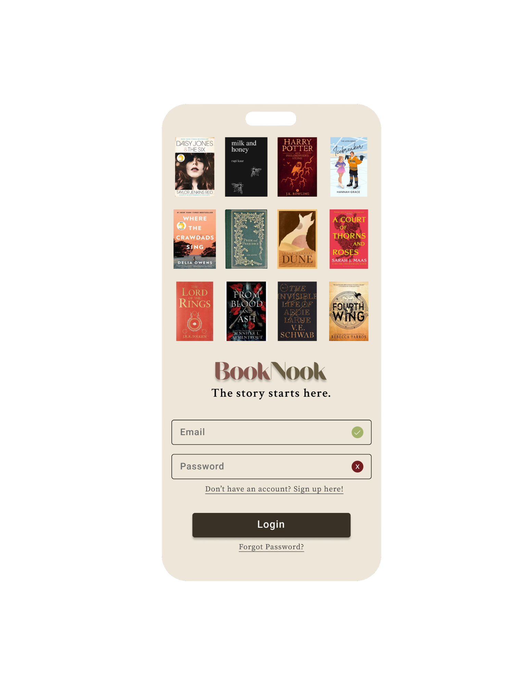
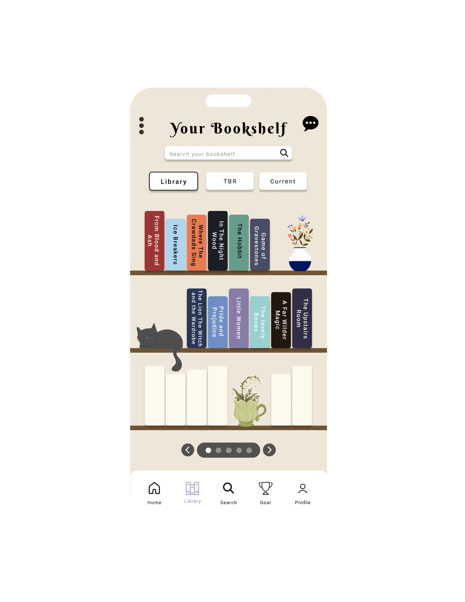
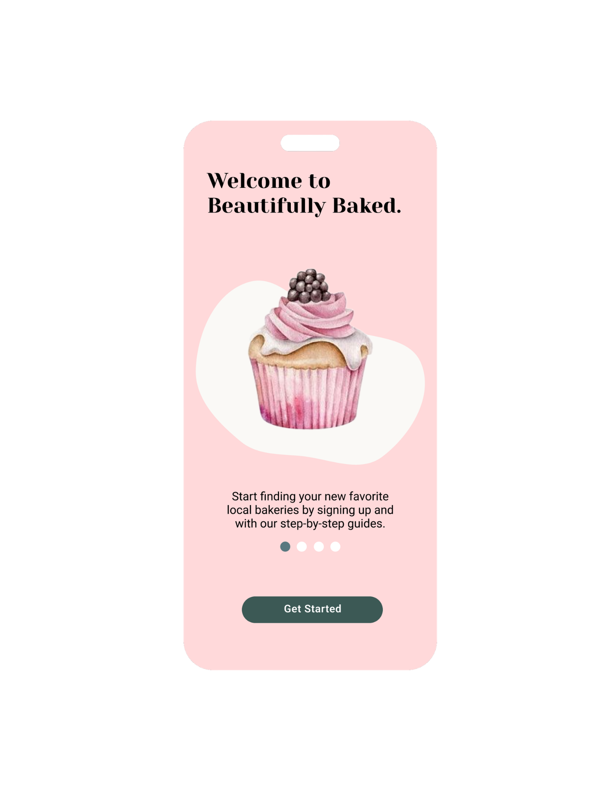
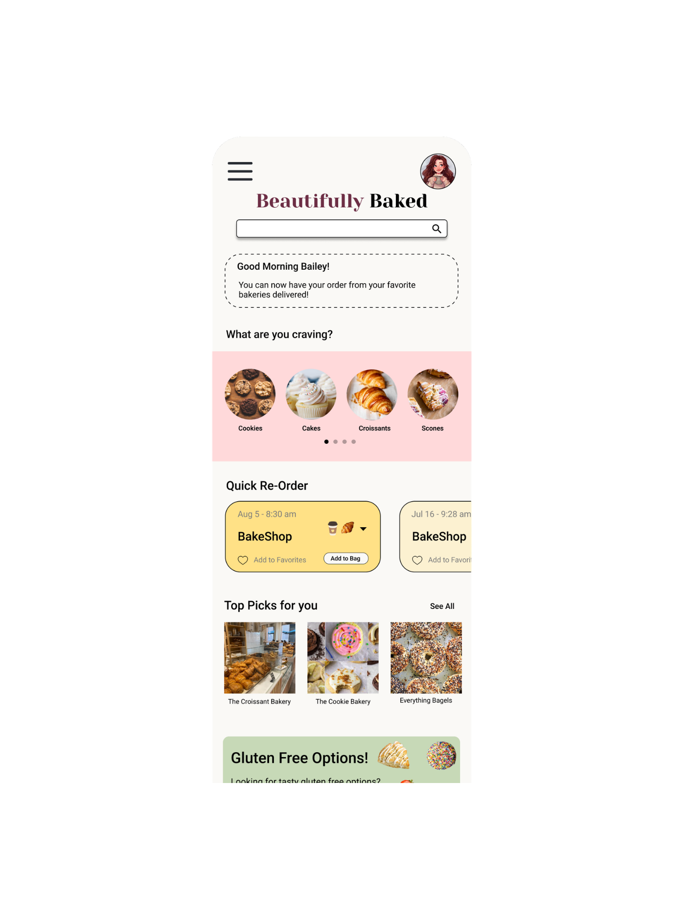
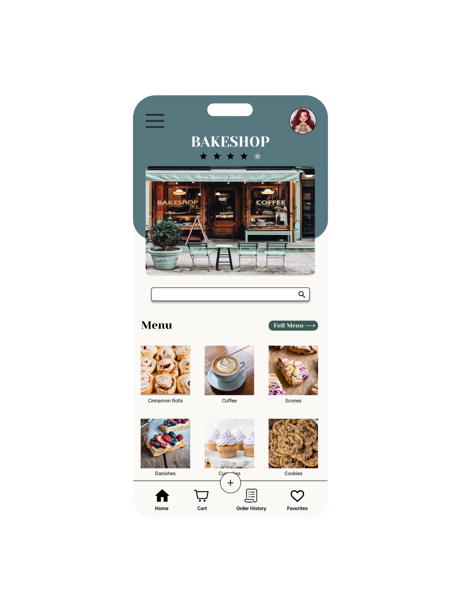

UX/UI Design
BookNook
A web application for book lovers to discover, review, and organize their favorite reads.
Project Gallery



Skills demonstrated: user interface design, visual hierarchy, and organizing information for readers.
App Concept
HouseMate
A web application for roommates to manage shared living spaces, including task assignments, expense tracking, and communication tools.

Skills demonstrated: problem solving, information organization, and designing around everyday user needs.
Web Development and Design
Beautifully Baked
A web application for a local bakery to display their menu, accept online orders, and manage their inventory.



Skills demonstrated: web development, user experience design, and responsive design.